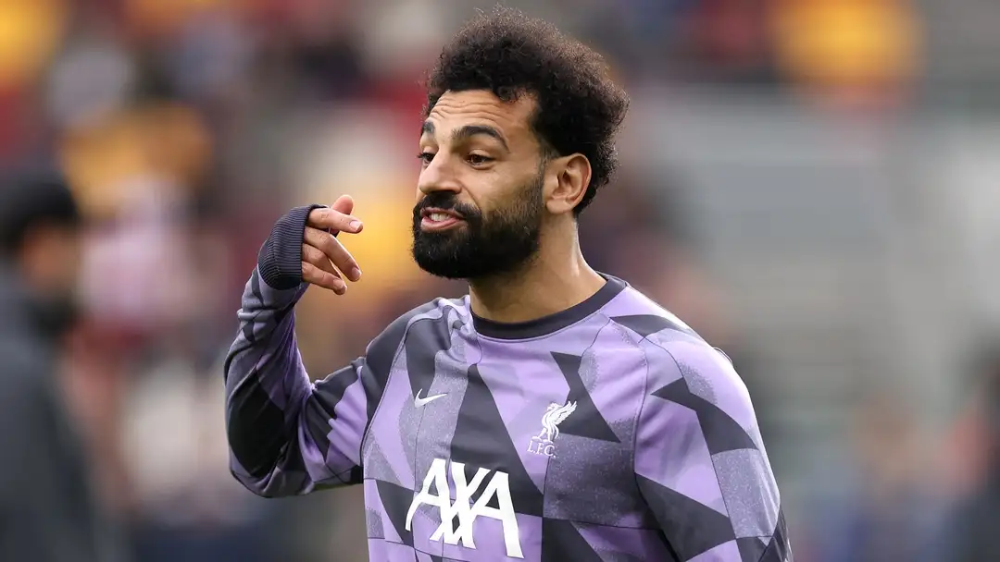

Mohamed Salah reveals whether Jurgen Klopp's imminent Liverpool departure will influence whether he stays at Anfield in summer with Saudi Pro League sides circling
Mohamed Salah admits he will leave Liverpool one day but Jurgen Klopp's impending departure won't affect any decision about his short-term future.
In January, Klopp announced he would step down as manager at the end of the season - sparking speculation over whether Salah, Virgil van Dijk, and Trent Alexander-Arnold, all of whom are out of contract in 2025, would follow suit. While the 31-year-old, who has been linked with a Saudi Pro League move, will leave Anfield eventually, the forward insisted Klopp's departure would not necessarily precipitate a transfer move for himself.
When asked by Sky Sports whether Klopp's exit would impact his future at Liverpool, the former Roma man replied: "No, no. It's life. It's part of life now, everything moves. Players left the club already, very important players left the club. One day I will leave the club, but no [Klopp leaving won't affect my future]."
